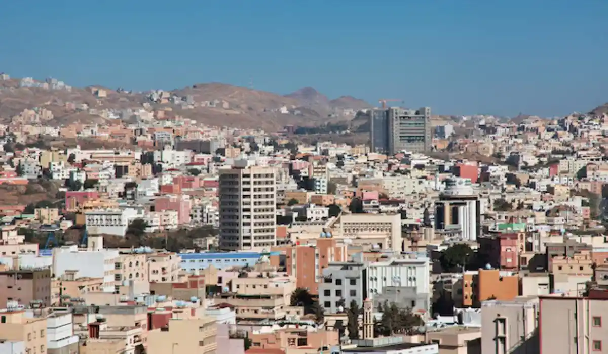

محامي ومكتب محاماة في أبها لجميع القضايا. استشارة قانونية سريعة.

فريقنا يخدم كل مناطق وأحياء أبها دون استثناء، بنفس سرعة الاستجابة ومعيار الخدمة.
يقدّم فريقنا في أبها استشارة وتمثيلاً قانونيًا لعملاء الأفراد والشركات في عاصمة منطقة عسير الجبلية، بخبرة عملية في القضايا العقارية والسياحية المرتبطة بمناخ المدينة المعتدل وطبيعتها الجبلية.
أبها عاصمة منطقة عسير، وتتميز بمناخها الجبلي المعتدل الذي يجعلها وجهة سياحية رئيسية للسعوديين خلال فصل الصيف هربًا من حرارة المناطق المنخفضة. هذا الطابع السياحي، إلى جانب الطبيعة الزراعية للمدرجات الجبلية المحيطة، يخلق مزيجًا من القضايا يتراوح بين النزاعات السياحية الموسمية وقضايا الأراضي الزراعية الجبلية التقليدية. كما تشهد المدينة توسعًا سكانيًا وعمرانيًا مستمرًا نظرًا لجاذبيتها كوجهة إقامة دائمة للعاملين في القطاعين الحكومي والتعليمي بالمنطقة.
يبرز الطلب في أبها على قانون العقارات والملكية، خصوصًا مع تزايد الاستثمار في الشاليهات الجبلية ومنتجعات السياحة البيئية. كما نتابع عددًا من قضايا تأسيس الشركات لمشاريع سياحية صغيرة ومتوسطة تستفيد من الإقبال المتزايد على السياحة الداخلية في المنطقة، إلى جانب قضايا المواريث المرتبطة بالمدرجات الزراعية الموروثة عبر أجيال في قرى المنطقة الجبلية. تشمل هذه القضايا أيضًا نزاعات حول حقوق الارتفاق بين ملاك أراضٍ متجاورة في المناطق الجبلية شديدة الانحدار، وهي نزاعات تتطلب خبرة محلية دقيقة بطبيعة التضاريس ونظام الملكية التقليدي المعمول به في هذه القرى الجبلية منذ عقود طويلة، وغالبًا دون توثيق رسمي حديث.
نظرًا للطابع السياحي المتنامي، نساعد أيضًا في ملفات مرتبطة بقطاع الضيافة والسياحة، من عقود تشغيل المنتجعات الجبلية إلى نزاعات الحجوزات الإلكترونية، إضافة إلى قطاع الزراعة المرتبط بالمدرجات الجبلية التقليدية.
تخضع قضايا أبها للمحكمة العامة للأحوال الشخصية والمواريث والقضايا المدنية، والمحكمة التجارية للنزاعات العقارية والسياحية، مع متابعة إلكترونية شاملة عبر منصة ناجز. في قضايا الأراضي الزراعية الجبلية، نساعد في التنسيق مع الجهات البلدية المختصة عند الحاجة لتوثيق حدود دقيقة في تضاريس جبلية معقّدة.
من الحالات المتكررة: صاحب منتجع جبلي صغير يواجه نزاعًا مع نزيل حول شروط الحجز والإلغاء، أو عائلة تمتلك مدرجات زراعية موروثة تحتاج لتسوية حصص الورثة، أو مستثمر يرغب في تحويل عقار سكني قديم إلى شاليه سياحي ويحتاج لفهم المتطلبات النظامية لهذا التحويل. حالة أخرى شائعة: نزاع بين شريكين في مشروع سياحي صغير حول توزيع الأرباح بعد موسم سياحي ناجح.
حالة إضافية شائعة في أبها: عائلة تدير منتجعًا سياحيًا صغيرًا كمشروع عائلي مشترك، وتحتاج لتوثيق حصص كل فرد في المشروع لتفادي خلاف مستقبلي عند رغبة أحد الأفراد في الانسحاب أو بيع حصته. نساعد هذه العائلات على صياغة اتفاقية شراكة واضحة تحدد آلية تقييم الحصص وطريقة الخروج من المشروع إن لزم الأمر.
في نزاعات الحجوزات السياحية، غالبًا ما تكفي مخاطبة رسمية أو استشارة سريعة لتسوية الخلاف، خصوصًا في المبالغ المتوسطة. أما في قضايا المواريث الزراعية الكبيرة أو النزاعات بين شركاء الأعمال، فقد يكون التمثيل الكامل ضروريًا لضمان حل عادل وموثّق لجميع الأطراف.
علامات تستدعي التواصل الفوري: خلاف مع نزيل حول شروط حجز أو إلغاء، اقتراب موسم زراعي دون تسوية واضحة لملكية مدرّج موروث، أو نزاع مع شريك تجاري حول توزيع أرباح مشروع سياحي. معالجة هذه المواقف مبكرًا يحفظ حقوقك ويقلل من فرص تفاقم النزاع.
يبدأ التواصل عبر رسالة واتساب موجزة، يليها تقييم سريع من محامٍ متخصص، ثم خطة عمل واضحة المدة. نولي اهتمامًا خاصًا لسرعة الاستجابة خلال موسم الصيف نظرًا لارتفاع النشاط السياحي والتجاري في المدينة خلال هذه الفترة.
في القضايا السياحية، يفيد وجود نسخة من تأكيد الحجز والمراسلات مع الطرف الآخر. في قضايا المواريث الزراعية، يساعد وجود صك الملكية الأصلي أو بيانات أساسية عن الورثة والمدرّج محل التركة. لا حاجة لأي مستندات في مرحلة الاستشارة الأولى؛ نطلبها فقط عند الانتقال الفعلي لمرحلة المطالبة.
في نزاعات الحجوزات السياحية، نحرص على تقييم سريع خلال يوم واحد نظرًا لحساسية التوقيت في هذا النوع من القضايا. أما قضايا المواريث الزراعية فتعتمد مدتها على عدد الورثة، ونعطيك تقديرًا واقعيًا لهذه المدة فور مراجعة تفاصيل حالتك، مع أولوية دائمًا للحالات المرتبطة بمواسم زراعية أو سياحية وشيكة الحلول، لأن التأخير في هذه الحالات قد يفوّت فرصًا لا تعوّض.
يعمل فريقنا في أبها بتنسيق وثيق مع فريقنا في خميس مشيط المجاورة، نظرًا للترابط الكبير بين المدينتين اللتين تشكلان معًا التجمع الحضري الرئيسي لمنطقة عسير. كثير من عملائنا يديرون أعمالًا تمتد بين المدينتين، ونضمن متابعة موحّدة لملفاتهم بصرف النظر عن مدينة إقامتهم أو موقع نشاطهم التجاري الرئيسي.
نجمع في أبها بين معرفة عملية بالسوق السياحي الجبلي المتنامي وحساسية خاصة تجاه قضايا الأراضي الزراعية التقليدية، وهو ما يجعلنا أقرب لفهم احتياجات المدينة الفعلية بدل تقديم استشارة عامة.
سؤال متكرر: هل يمكن تسجيل شكوى ضد منصة حجز إلكترونية وليس فقط ضد النزيل أو المضيف؟ يعتمد ذلك على طبيعة الخلاف وبنود اتفاقية استخدام المنصة، ونساعدك على تقييم ذلك بدقة. سؤال آخر: هل يختلف تقييم قيمة المدرّج الزراعي عن تقييم أرض سكنية عادية؟ نعم، نظرًا لعوامل إضافية مثل نوع الأشجار وحالة نظام الري، ونساعدك على فهم هذه العوامل عند تقييم حصص الورثة. سؤال ثالث شائع بين أصحاب المنتجعات الجديدة: هل يلزم الحصول على موافقة الجيران قبل تشغيل منتجع صغير في منطقة سكنية؟ يعتمد ذلك على تصنيف المنطقة والأنظمة البلدية المعمول بها، ونساعدك على التحقق من ذلك قبل بدء التشغيل الفعلي لتفادي أي إشكال قانوني أو إداري لاحق مع الجيران أو الجهات البلدية المختصة بالمنطقة السكنية التي يقع فيها المنتجع.
ندرك أن كثيرًا من أصحاب المنتجعات الصغيرة في أبها استثمروا مدخرات شخصية كبيرة في مشاريعهم السياحية، وأن أي نزاع طويل قد يهدد استمرارية هذه المشاريع الصغيرة. نلتزم بمعالجة هذه الملفات بسرعة وجدية، ونساعد أصحاب المشاريع على فهم حقوقهم والتزاماتهم النظامية بوضوح تام. كما نتعامل مع قضايا المدرجات الزراعية الموروثة بصبر خاص، مدركين أن هذه الأراضي غالبًا ما تحمل تاريخًا عائليًا يمتد لعدة أجيال، ونحرص على أن تخرج كل عائلة من هذه العملية بعلاقات أسرية سليمة لا مجرد قسمة قانونية رسمية.
سؤال متكرر: هل يحتاج تشغيل منتجع سياحي صغير لتراخيص متعددة من جهات مختلفة؟ نعم غالبًا، ونساعدك على فهم المسار الصحيح للحصول على جميع التراخيص اللازمة لتفادي أي مساءلة لاحقة. سؤال آخر: هل يمكن تحويل مدرّج زراعي مهجور إلى مشروع سياحي؟ يعتمد ذلك على تصنيف الأرض النظامي، ونساعدك على التحقق من ذلك قبل الاستثمار في أي تطوير.
يغطي فريقنا في أبها جميع الأحياء والمناطق دون استثناء، بما في ذلك السودة، المنهل، ومنطقة الجبل الأخضر، بنفس سرعة الاستجابة ومعيار الخدمة بصرف النظر عن موقعك داخل المدينة.
نعم، نتابع بانتظام خلافات الحجز والإلغاء بين أصحاب المنتجعات الصغيرة والنزلاء خلال مواسم الذروة السياحية، بأسرع وقت ممكن.
نعم، نتعامل بحساسية خاصة مع قضايا مواريث الأراضي الزراعية الجبلية الموروثة عبر أجيال في قرى منطقة عسير.
نعم، نوضح المتطلبات النظامية لهذا النوع من التحويل بالتنسيق مع الجهات البلدية المختصة قبل بدء أي استثمار.
نعم، فريقنا يخدم منطقة عسير بالكامل، ولخميس مشيط أيضًا صفحة تفصيلية خاصة بها.
الاستشارة الأولية مجانية دائمًا؛ تكلفة التمثيل الكامل تُحدَّد بشفافية بعد فهم تفاصيل ملفك.
يعتمد ذلك على التصنيف النظامي للأرض، ونساعدك على التحقق من ذلك مع الجهات المختصة قبل أي استثمار فعلي.
نعم، نتابع بانتظام عملاء يقيمون خارج أبها ولديهم عقارات أو مشاريع سياحية فيها، مع تنسيق كامل عن بُعد.
نعم، نساعد في تسوية هذا النوع من النزاعات المرتبطة بحقوق المرور والارتفاق بين الأراضي الجبلية المتجاورة في قرى المنطقة المختلفة تمامًا.
تواصل مع محامٍ مرخّص خلال دقائق عبر الواتساب — في أي مدينة بالمملكة.
ابدأ الاستشارة الآن